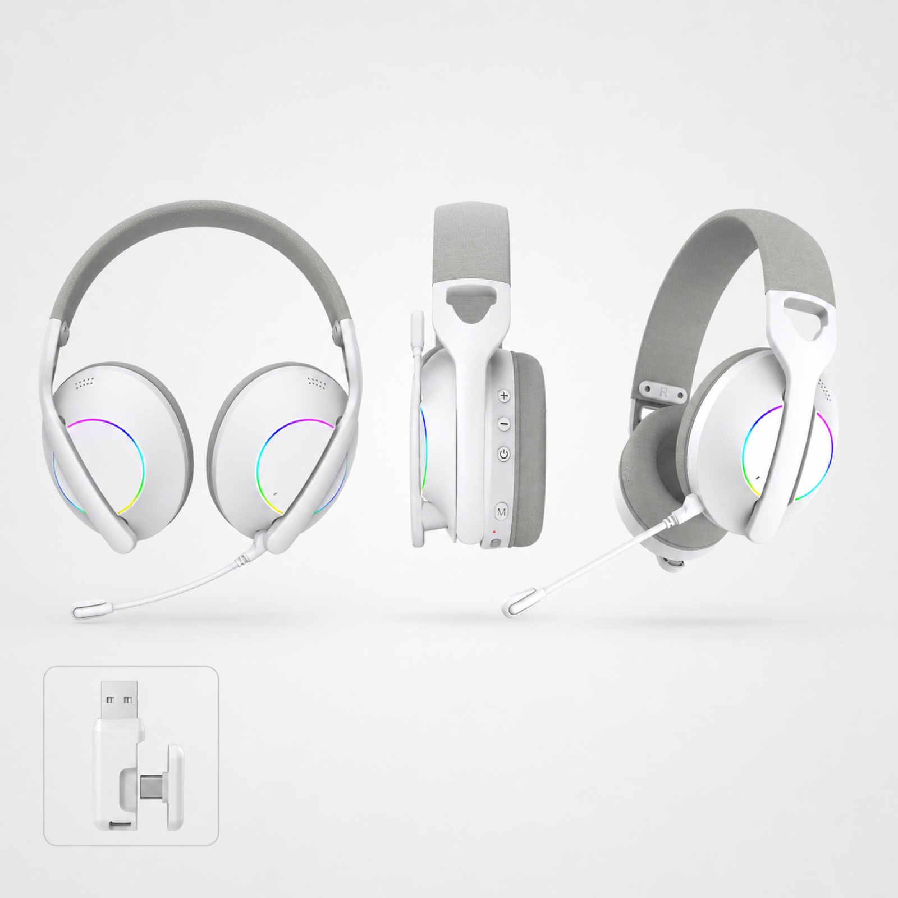
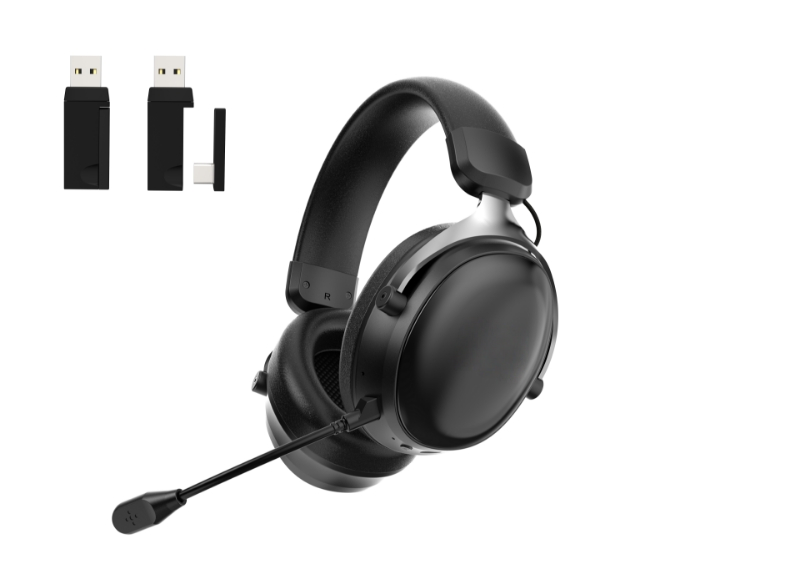
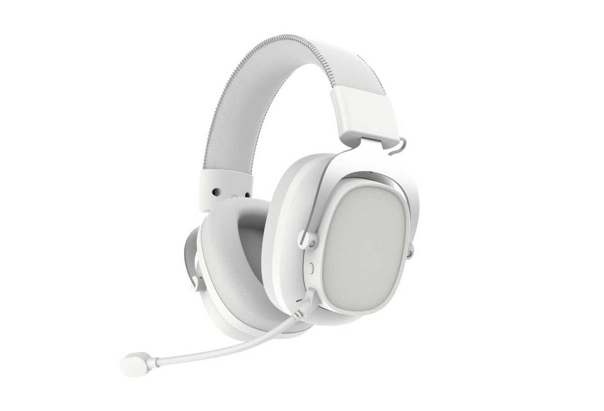
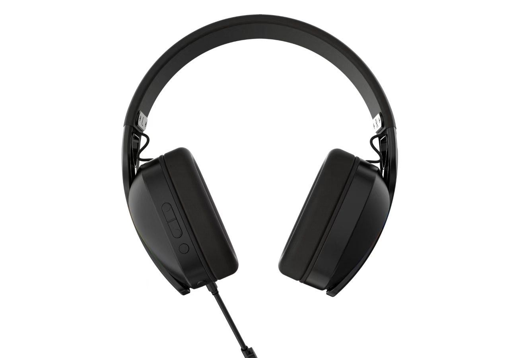
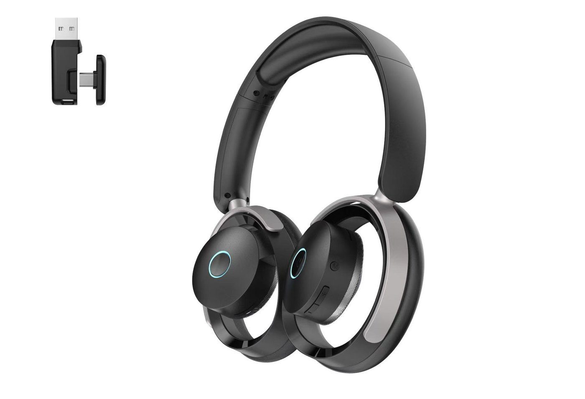
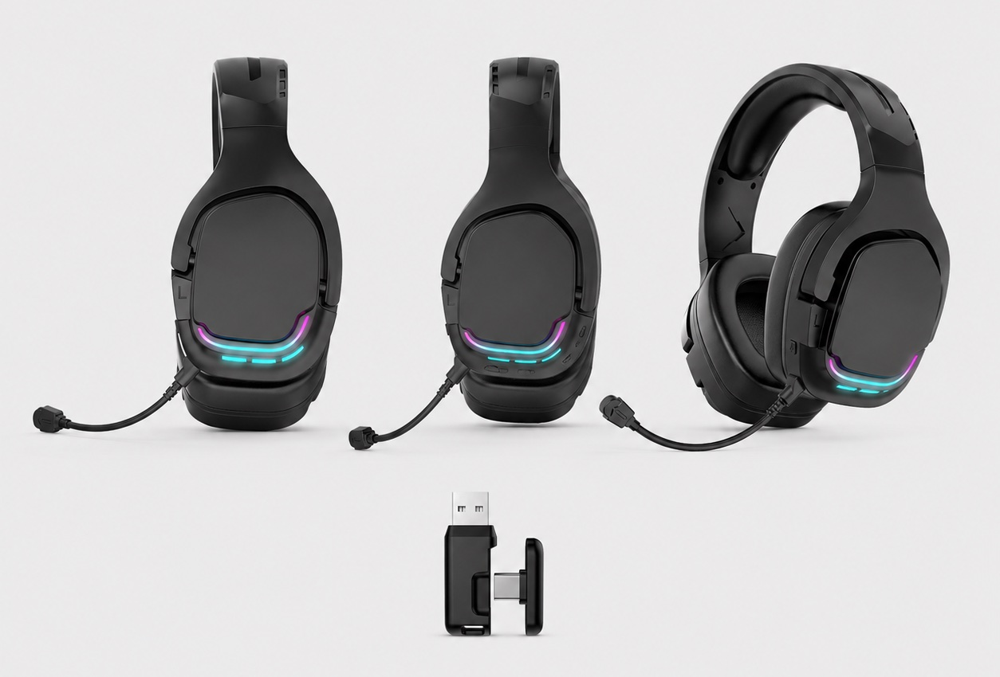

G936 / 40mm driver, 800mAh
2.4GHz wireless, fabric ear cushions and a detachable microphone. Listed playback: about 40 hours with lights off.
View G936 specificationsPrivate label / OEM & ODM sourcing
For importers, distributors and private-label brands. Compare 2.4GHz receiver headsets and tri-mode models with 40-53mm drivers, then confirm sample versions, custom logos, colors and packaging.
Product selection

2.4GHz wireless, fabric ear cushions and a detachable microphone. Listed playback: about 40 hours with lights off.
View G936 specifications
2.4GHz, Bluetooth and wired connections, 1000mAh battery and detachable microphone. About 50 hours listed with lights off.
View G938 specifications
1000mAh battery, detachable microphone and about 50 hours listed with lights off. Confirm ANC on the selected sample version.
View G941 specifications
2.4GHz wireless and detachable microphone. Listed playback: about 25 hours with lights off; listed charging time: 2 hours.
View G935 specifications
Compare the documented dual-driver configuration, detachable microphone, RGB styling and 400mAh battery on the model page.
View G940 specifications
1000mAh battery and about 50 hours listed with lights off. Review receiver, accessory and packaging images on the model page.
View G926 specificationsSide-by-side selection
Listed specifications, not independent test results. Playback figures are approximate with lights off; volume, connection mode and use affect actual runtime. Confirm the final configuration by sample.
| Model | Connection | Driver | Battery | Playback, lights off | Charging | Microphone |
|---|---|---|---|---|---|---|
| G936 | 2.4GHz receiver | 40mm | 800mAh | About 40h | 3h | Detachable |
| G938 | 2.4GHz / Bluetooth / wired | 53mm | 1000mAh | About 50h | 3-4h | Detachable |
| G941 | 2.4GHz / Bluetooth / wired | 50mm | 1000mAh | About 50h | 3-4h | Detachable |
| G935 | 2.4GHz receiver | 40mm | 500mAh | About 25h | 2h | Detachable |
Share your target devices, sales market and expected quantity. Ask about the receiver, microphone or accessory set before preparing a full RFQ.
Connection & compatibility
A USB plug alone does not establish console compatibility. Confirm the exact device, receiver and headset version, including both playback and microphone operation.
The headset connects through a matching receiver. Check the port or adapter, pairing process, controls and microphone on each target device.
Bluetooth connects through the target device's Bluetooth function. Check audio and microphone behavior in the intended application; results may differ from receiver mode.
G938 and G941 combine 2.4GHz, Bluetooth and wired use. Confirm the included cable and receiver, mode switching and supported functions on the selected sample.
OEM / private-label planning
Logo, color and packaging requirements can be discussed for the selected model. Customization scope, availability and commercial terms are confirmed for each project, not assumed from a catalogue image.
Provide your artwork and preferred placement. Confirm the finish, color and feasible branding method before approving the sample.
Agree the receiver, adapters, cables, microphone, manual languages and retail box contents. Match packaging claims to the approved product version.
State the destination market and required documents. Verify applicable reports against the exact model and configuration; a product image is not certification evidence.
Product videos
Buyer questions
Logo, color and packaging requirements can be discussed after selecting a model. Confirm artwork placement, available finishes, accessory contents and the approved sample before agreeing the final private-label specification.
Choose according to the target devices and intended use. A 2.4GHz headset uses a matching receiver; Bluetooth uses device pairing. Compare playback, microphone behavior and controls on the actual devices. Tri-mode models add wired use, with functions confirmed by sample.
No. A connector that fits does not guarantee audio and microphone support. Confirm the exact console or computer, receiver version, adapter requirements and connection mode, then test both playback and microphone operation before making compatibility claims.
Send your destination market, sales channel, expected quantity, target devices and preferred connection modes. Include any model shortlist, logo artwork, packaging requirements, required documents and sample timing. If you have not chosen a model, describe the intended use first.
Use the sample inquiry route to confirm the model version, availability and sample terms. Review connection modes, microphone, controls, fit and accessory contents on the actual sample before approving the product and packaging specification.
Request the MOQ and lead time for your selected model and configuration. Include your expected quantity, logo and color requirements, packaging, destination and preferred shipment date. Confirm sample approval, production timing and shipping arrangements in the quotation before committing to an order.
Compare figures under the same stated conditions. G935, G936, G938 and G941 list approximate playback with lights off. Volume, lighting, connection mode and use affect actual runtime, so verify your required operating conditions during sample evaluation.
Further selection
Include your expected quantity, connection needs and branding requirements. Confirm a model and sample configuration before discussing the final order.